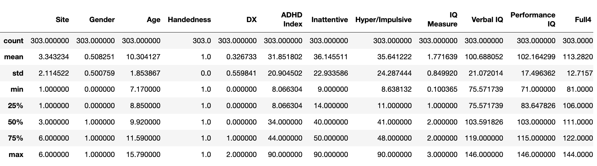
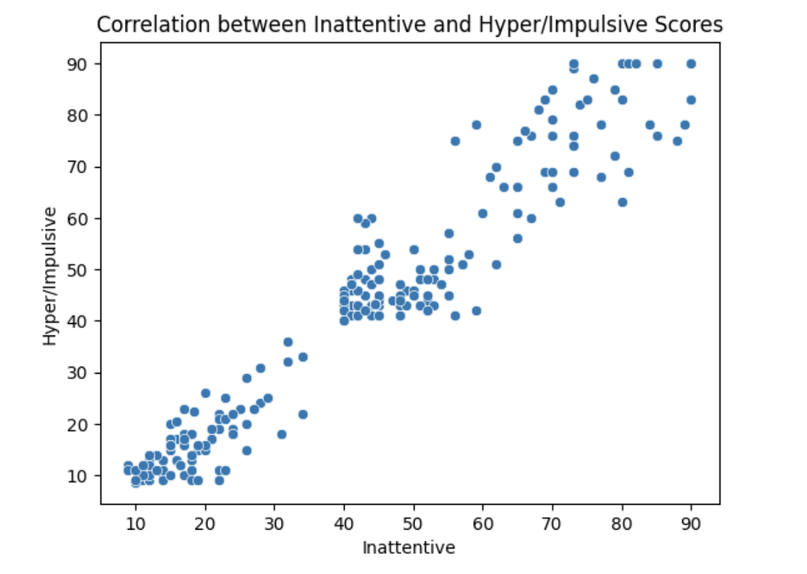
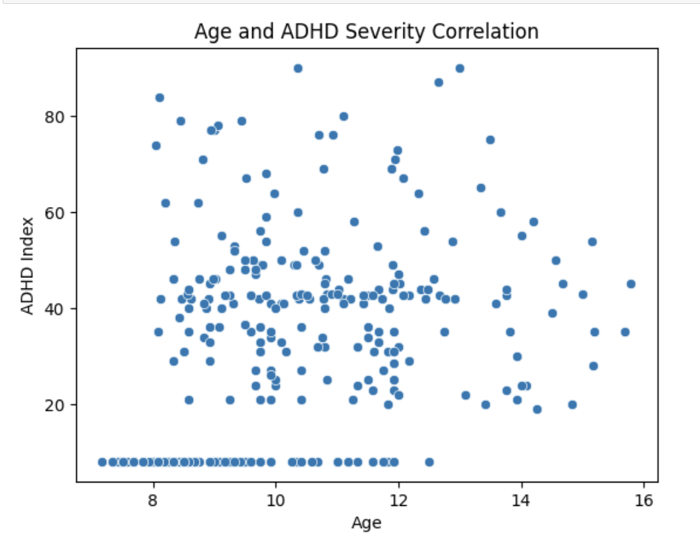
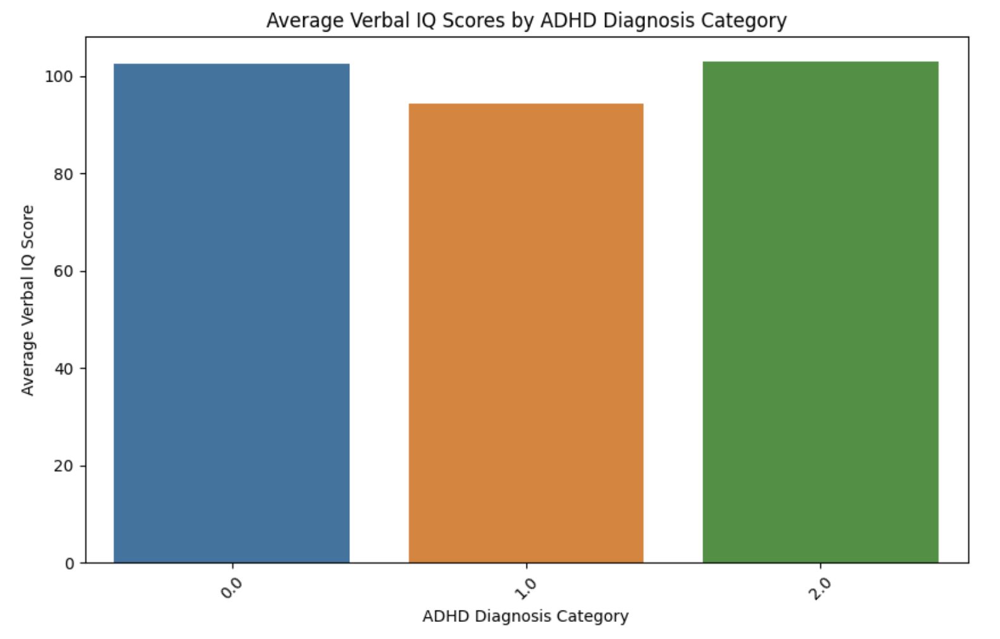
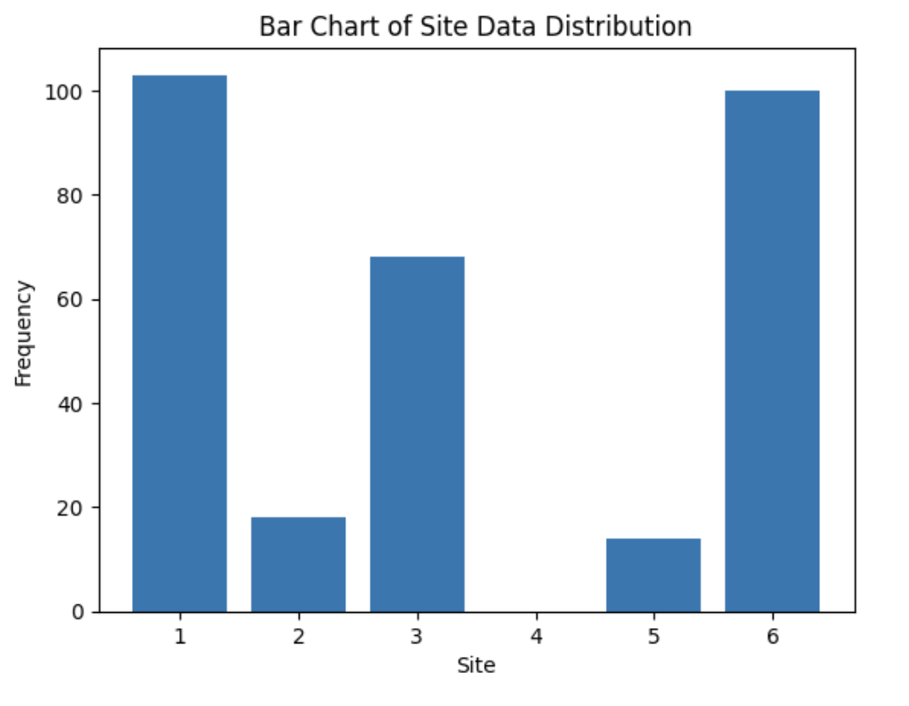
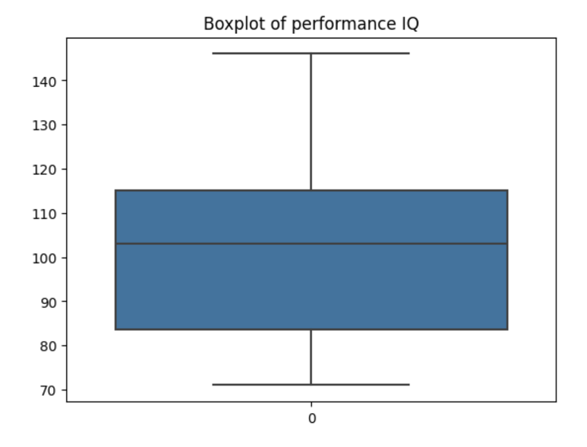
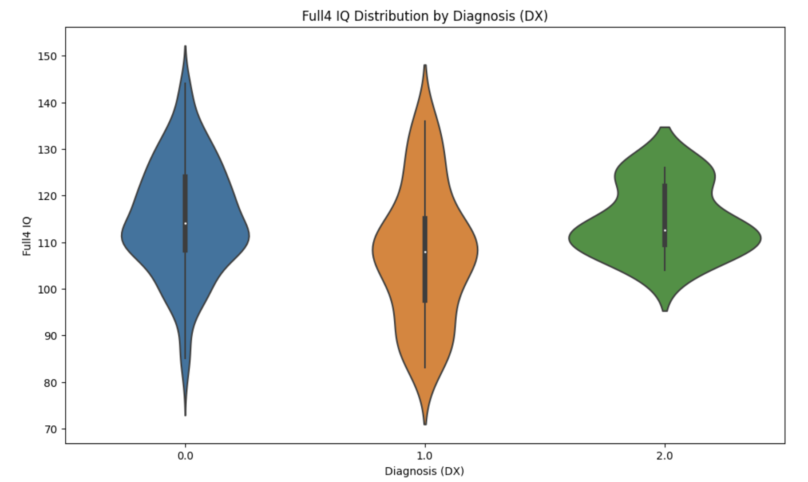

Data Exploration
The dataset after data cleaning contains information such as site, gender, age, handedness, diagnosis (DX), ADHD index, inattentive and hyper/impulsive scores, IQ measures, and different IQ scores (verbal, performance, and full).
Tools and Software
- Software tools used in Python are Pandas, MatplotLib and seaborn
- pandas : A powerful library for data manipulation and analysis. It offers data structures like DataFrames and Series, making it easier to clean, analyze, and visualize data.
- NumPy:Essential for scientific computing in Python. It provides support for large, multi-dimensional arrays and matrices, along with a collection of mathematical functions to operate on these arrays.
- Matplotlib:A widely used plotting library. It is great for creating static, interactive, and animated visualizations in Python.
- Seaborn:Built on top of Matplotlib, Seaborn is a statistical data visualization library that provides a high-level interface for drawing attractive and informative statistical graphics.
- Used describe() method to display the summary statistics of the dataset
- Used boxplots from the sns library to find number of outliers for certain columns( Age,ADHD Index,Verbal IQ,Performance IQ,Full4 IQ)
Data Understanding:
- Site: Identifier for different data collection sites. Values range from 1 to 6.
- Gender: Coded as 0 or 1, likely representing male and female.
- Age: Continuous variable representing the age of individuals. Ranges from 7.17 to 15.79 years.
- Handedness: Coded as 1, which might indicate all participants are right-handed or the data is lacking handedness diversity.
- DX (Diagnosis): Diagnostic category, with values 0, 1, and 2. The meaning of each category needs to be understood from the study's context.
- ADHD Index: A score presumably indicating ADHD severity or likelihood. Ranges from 8.07 to 90.
- Inattentive: Score for inattentiveness, ranges from 9 to 90.
- Hyper/Impulsive: Score for hyperactivity/impulsiveness, ranges from around 8.64 to 90.
- IQ Measure: A categorical variable with values 0.1 to 3. The specific meaning of these values needs context.
- Verbal IQ: Score for verbal IQ, ranging from around 75.57 to 146.
- Performance IQ: Score for performance IQ, ranging from 71 to 146.
- Full4 IQ: Overall IQ score, ranging from 81 to 144.
Descriptive Statistics
- These statistics provide a quick overview of the shape, central tendency, and spread of the data, which are essential for further analysis and interpretation. Key aspects of descriptive statistics includes mean, median, mode, range, variance, standard deviation, Interquartile Range (IQR) 
Given this information, here are some potential data science questions and hypothesis tests explored
-

- Inattentiveness and Impulsivity are two common attributes of ADHD. We can see a strong positive correlation between both the variables, suggesting that they are associated. The ADHD patients with high inattentives, might have high impulsivity or one might lead to another.
- Age and ADHD Severity: Is there a correlation between age and the severity of ADHD symptoms as measured by the ADHD index?
- Scatter Plot to view the correlation between age and ADHD severity 
- Conducted a pearson correlation test to see if there is any correlation between age and ADHD severity. The below test results suggest that there is a statistically very moderate positive correlation between age and the severity of ADHD symptoms as measured by the ADHD index. It supports the above EDA.
- Pearson's correlation: 0.3101172481015408, P-value: 3.540521026496185e-08
- Spearman's rank correlation: 0.35938985179456373, P-value: 1.1433896709914024e-10
- this is a very small p-value, indicating that the correlation is statistically significant.
- Verbal IQ Scores and ADHD Diagnosis:Are there differences in Verbal IQ among different ADHD diagnosis categories (e.g., ADHD vs. non-ADHD)?
- Visualisation of Verbal IQ scores fro different ADHD categories 
- Conducted an Anova test to see if there is statiscally significant difference in Verbal IQ scores among the three ADHD diagnosis categories
- F- value is 3.5392436378501952 and p-value is 0.03868518536792531
- The low p-value and large F-value indicates that there are statistically significant differences in Verbal IQ scores among the ADHD diagnosis categories included in the analysis.
- The large value of F gives more evidence to reject the null hypothesis
- More broadly, Verbal IQ is linked to problem solving, abstract reasoning, and working memory.There are apparent differences in the average Verbal IQ scores among the ADHD diagnosis categories. This could indicate that Verbal IQ is variably affected by different types of ADHD. While the plot provides a visual representation, further statistical analysis would be required to determine the significance of these differences.
- Site Variability: To check how the distribution of participants are in different sites. 
- Impact of Handedness: Is there a statistically significance difference in the ADHD scores of men and women
- t-test comparing the ADHD severity scores between left-handed and right-handed
- H0: Handedness does not have an association with ADHD severity or IQ scores.
- H1: Handedness is associated with differences in ADHD severity or IQ scores.
- T-statistic: -1.140797487395754 and P-value: 0.2548610506601483
- P-value is greater than 0.05. There is no statistically significant difference in ADHD scores between left-handed and right-handed individuals.
- Creating a violin plot for the 'Full4 IQ' distribution across 'DX' (Diagnosis) categories
- Distribution Shape: Each 'violin' shows the kernel density estimation of the Full4 IQ for each diagnosis category. Wider sections indicate a higher density of data points at those IQ scores.
- Median and Quartiles: The thick bar in the middle of each violin represents the interquartile range, with the white dot denoting the median IQ score.
- Comparisons Between Diagnoses: By comparing the shapes and sizes of the violins, you can observe differences or similarities in the IQ distributions across different diagnostic categories.
- Data Spread and Outliers: The thin lines extending from the violins indicate the overall range of IQ scores, including potential outliers or extreme values.
- Check for outliers using the boxplot
- Box plot of performance IQ. we can see there are no outliers in performance IQ
- The outliers have been dealt in the data cleaning section. To avoid loss of data, replaced the outliers with mean, median and mode accordingly 
-

Results
Conclusion
The EDA provided valuable insights into the nature of the dataset and the underlying patterns within it. While it highlighted several interesting relationships and trends, it also underscored the complexity of ADHD diagnosis and symptomatology. The findings from this analysis will serve as a guide for more detailed and focused investigations, potentially contributing to better understanding and management of ADHD.